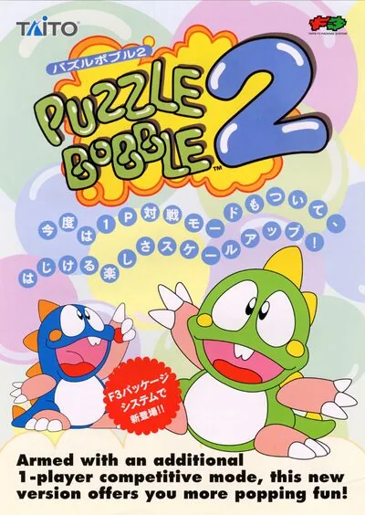

FBA (FinalBurn Alpha)
Bubble Bobble II
- Año: 1994
- Desarrollador: Taito Corporation Japan
- Género: Plataformas / Correr y saltar
- Jugadores: 4 jugadores
- Probando
- A dos: a la vez
Secuela de Bubble Bobble (también llamada Bubble Symphony): cuatro amigos convertidos en dragones de burbujas recorren el mundo de un libro mágico para vencer a Hyper Drunk. Tras cada jefe se elige camino, y hay varios finales.
Controles
botones según las guías: que B lanza burbujas (mantenido y soltado, disparo cargado) y A salta.
Dos botones (no usa Y ni X).
| Panel | Juego |
|---|---|
 | Lanzar burbujas (mantener y soltar: disparo cargado) ⚠️ |
 | Saltar ⚠️ |
  | Empezar |
 | Meter una moneda |
+  | Salir del juego |
El panel en FBA (FinalBurn Alpha)

🔎 Para mirar en la bartop (2)
Comprobaciones rápidas: con mirarlo jugando un momento basta. Cuéntamelo en las pruebas.
- : Lanzar burbujas (mantener y soltar: disparo cargado) ⚠️ — ¿es así?
- : Saltar ⚠️ — ¿es así?
Argumento
Hace mucho tiempo, cuatro ancianos encerraron al malvado Hyper Drunk en un libro mágico. Cuatro amigos, Bubby, Bobby, Kulun y Coron, encuentran el libro, empiezan a leerlo y, sin querer, liberan a Hyper Drunk, que los convierte en dragones de burbujas y los atrapa en el mundo del libro. Son Bubblun (verde) y Bobblun (azul), hijos de los Bub y Bob del primer Bubble Bobble, y dos chicas, Kululun (ámbar) y Cororon (rosa).
Para volver a ser humanos tienen que encontrar una vara mágica y llegar hasta Hyper Drunk.
Final: sin las cuatro llaves (o sin la vara) se llega a un final falso; con todo, se alcanza el mundo final y el final bueno. En el modo Super está el final verdadero.
Fuentes
Jugabilidad
Lo marcado con ⚠️ no está probado en la bartop.
- Tipo de juego: plataformas de Taito (1994), también llamado Bubble Symphony. Se juega como Bubble Bobble: atrapar a los enemigos en burbujas y reventarlas.
- Pasar de nivel: hay que acabar con todos los enemigos de la pantalla.
- Jefes: aparece uno cada 5-10 niveles (normalmente, cada 10), al final de cada zona. Las zonas tienen temas de otros juegos de Taito.
- Tamaño: 164 niveles en total, 18 de ellos de jefe; en una partida se juegan como mucho 58, llegando a la zona final secreta.
- Caminos: tras cada jefe se elige entre dos puertas, así que el recorrido cambia de una partida a otra.
- Disparo cargado: mantén el botón de burbuja y suéltalo cuando brillen los cuernos (o el lazo): salen tres burbujas a la vez, con una forma distinta según el personaje.
- Personajes:
- Bubblun: equilibrado; tres burbujas en línea recta.
- Bobblun: más rápido y con menos alcance; tres burbujas en abanico.
- Kululun: el mayor alcance pero lenta; burbujas en «T» (delante, detrás y abajo).
- Cororon: la que sopla más rápido; «T» invertida (delante, detrás y arriba).
- Notas musicales: en cada zona hay notas escondidas, rojas, azules, verdes o naranjas. Con tres del mismo color sale una llave gigante de ese color. Con las 4 llaves, tras vencer al jefe de la ronda 48 se abre una puerta dorada con cuatro cerraduras que lleva a la zona final; sin ellas, final falso.
- La vara (R-O-D): en ciertos niveles, si esperas a que salga el «Hurry up!», aparecen un momento burbujas transparentes con las letras R, O o D. Al completar ROD sale una vara mágica que gira y brilla: un escudo de luz azul envuelve al personaje y lo devuelve a su forma humana, que sigue lanzando burbujas, ahora con un tubo.
- Cameos: salen personajes y escenarios de otros juegos de Taito (The NewZealand Story, Darius, Space Invaders, Arkanoid, Kiki Kaikai…).
Botones según las guías (⚠️ por confirmar)
| Recreativa | Panel | Acción |
|---|---|---|
| Botón 1 | B | Lanzar burbujas (mantener y soltar: disparo cargado) |
| Botón 2 | A | Saltar |
Fuentes
Guía de niveles
Hay dos recorridos completos: el modo normal y el modo Super (con mundos distintos). En la ronda 58, al final de la zona final, se lucha contra una marioneta de Super Drunk y luego contra el propio Hyper Drunk. Cada mundo termina en un jefe y después se elige puerta.
| Modo | Mundos |
|---|---|
| Normal | Entrance World · Kiki Kaikai · TV Machine · Computer World · Treasure Desert · Final World |
| Super | Entrance World · Radish Land · Sun «A» Zone · Central Park · Japanesque · Final World |
- Los mundos de cada partida dependen de las puertas que elijas.
- Para el final bueno hacen falta las 4 llaves (cartas musicales) y la vara.
Fuentes
Objetos
| Objeto | Qué hace |
|---|---|
| Cartas con notas musicales | Dan las 4 llaves que abren el mundo final. |
| Vara mágica | Devuelve a los personajes su forma humana; hace falta para el final bueno. |
Fuentes
Trucos y secretos
Secretos
- Varios finales: final falso (sin llaves o sin vara), final bueno en modo normal y final verdadero en modo Super: se consigue venciendo a Hyper Drunk en forma humana en el modo Super. El longplay de «Vídeos» los enseña todos, incluidos 10 finales malos distintos.
- Puertas: tras cada jefe, dos puertas que llevan a mundos diferentes.
Fuentes
Longplay

Partida completa de la recreativa, con todos los finales (85 min), de AL82 Retrogaming Longplays: Bubble Symphony Longplay (Arcade) [QHD] [All Endings].
Pulsa el minuto de un nivel para ver el vídeo desde ese punto.
Niveles
| Modo | Mundos |
|---|---|
| Normal | |
| Super | |
| Finales malos |